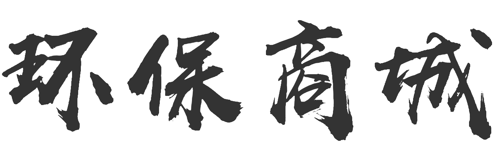
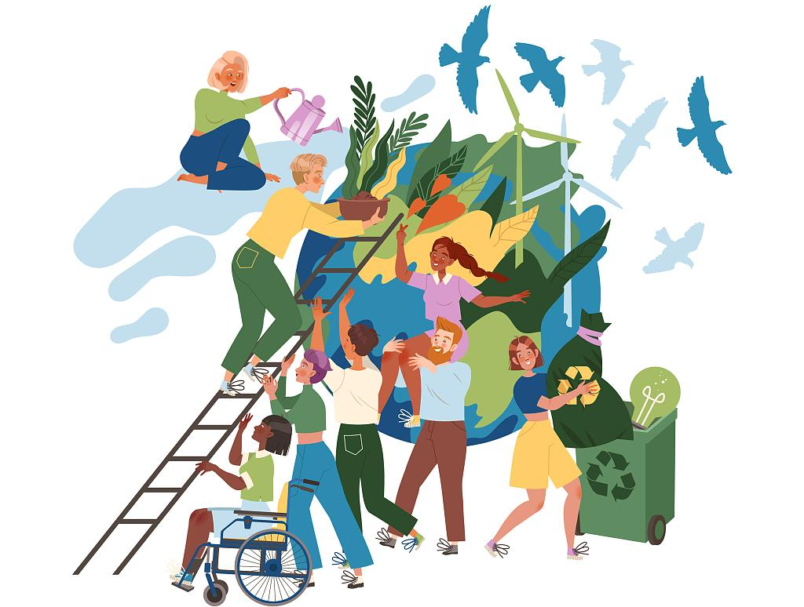
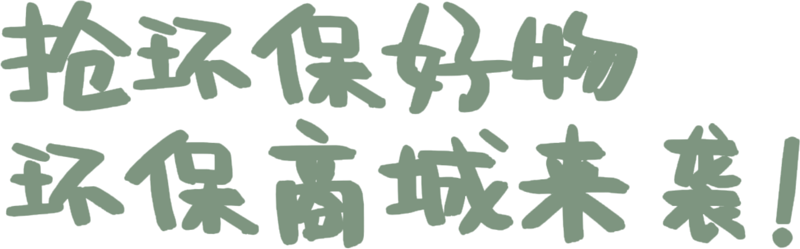
欢迎来到我们的环保商城，这里是一个将垃圾分类理念过渡为变废为宝实践的平台！
我们致力于将垃圾分类过渡为变废为宝的概念，并提供环保商品。在这里，您可以找到各种实用、美观、环保的产品。 通过购买这些商品，您不仅获得高品质的产品，还为环境做出贡献。我们还提供关于垃圾分类和废物资源化的知识和指导。 让我们一起为可持续发展努力，保护环境！欢迎加入我们的环保商城！
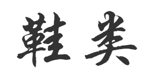
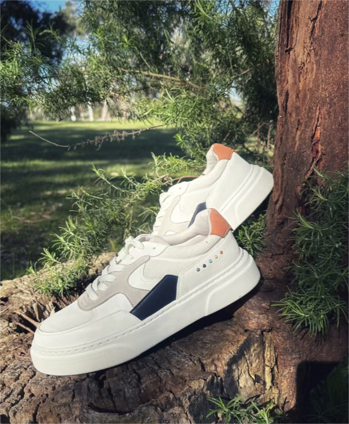
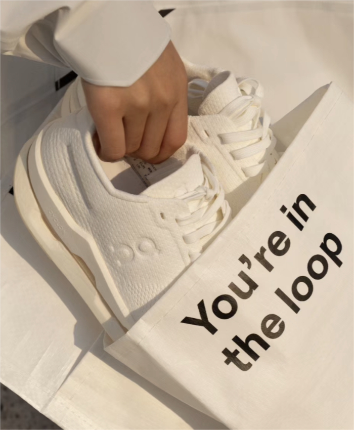
Reviver Lab的“45”球鞋就是一个很好的例子，整双鞋由45片优质尾料拼接而成， 采用了多种环保材料，如再生皮革、再生苹果皮、回收胶樽、回收海绵等，并且每款产品都由尾料重组制成。
Reviver Lab使用100%回收塑料瓶制作鞋带，采用回收胶樽作为内里（lining），并采用水松木和回收发泡胶等材料制作鞋垫， 使其具有天然防菌防臭功能，透气舒适，同时也能提供足弓承托的设计。
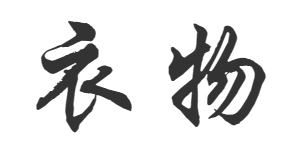
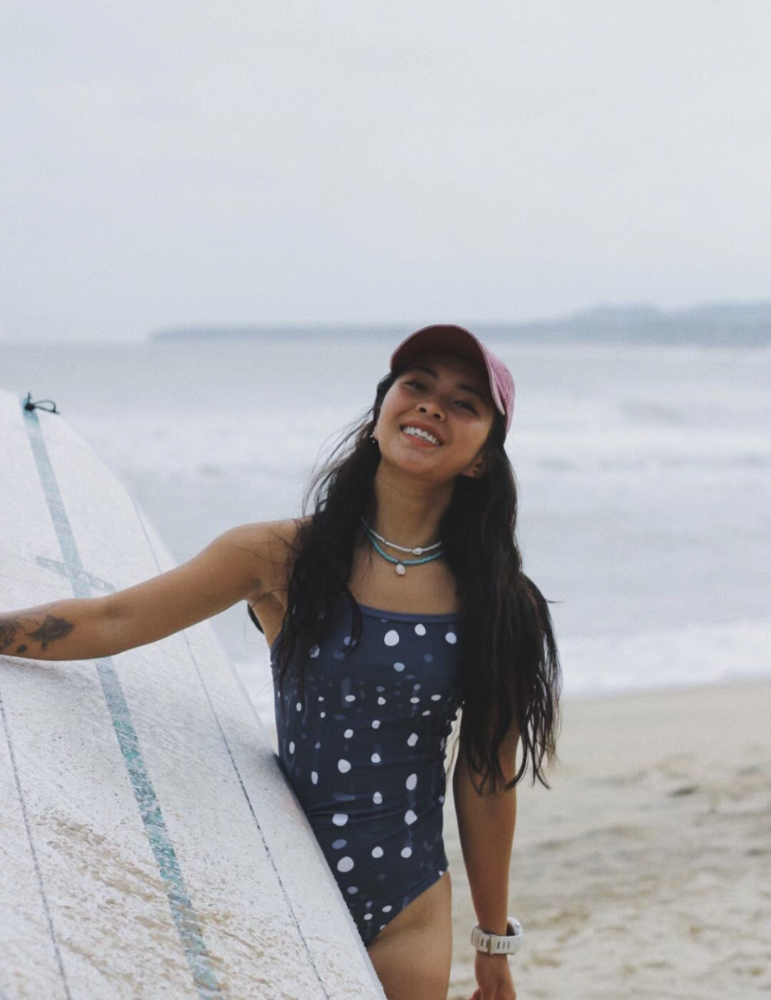
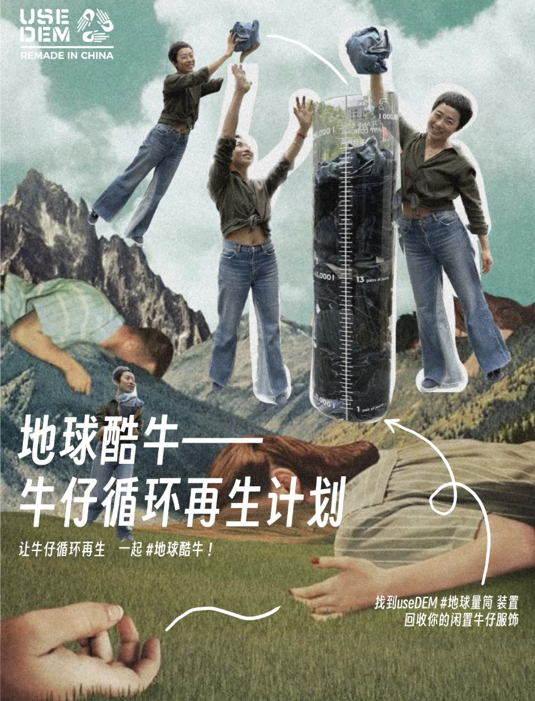
用回收渔网制成的泳衣是一种环保的时尚选择。通过回收和重新利用这些废弃的渔网，可以减少海洋垃圾的数量，同时将其转化为有价值的产品，如泳衣。 制作过程中，回收的渔网被清洗、破碎并重新纺织成面料，然后用于制作泳衣。
收集废弃牛仔。将闲置牛仔裤进行升级改造，变成独特的背包和配饰，用环保友爱的方式，改造出时尚又不失功能性的牛仔单品，让牛仔裤重获新生的同时，也很耐用。
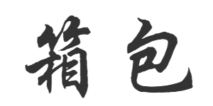
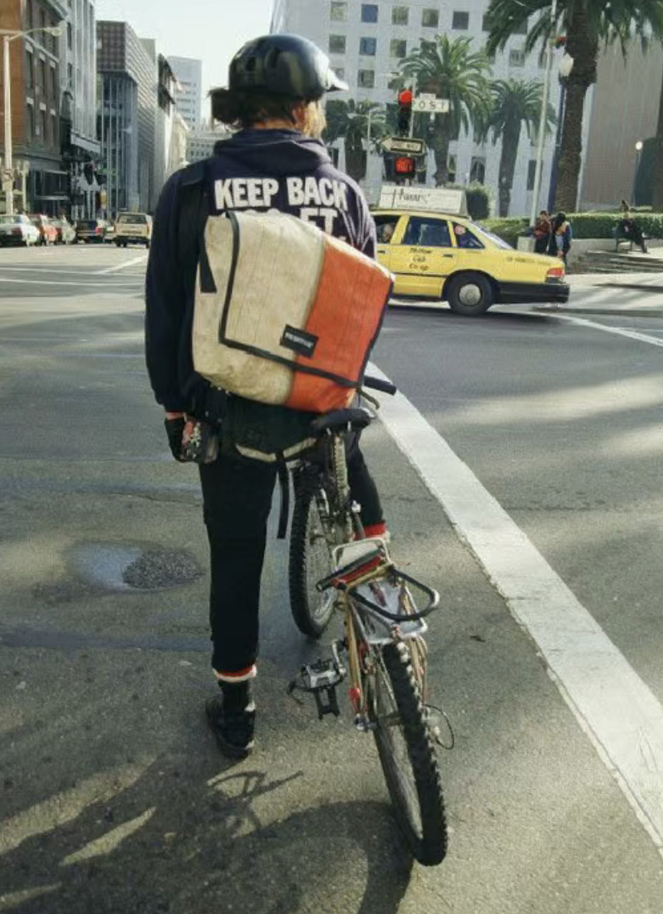
包袋是 FREITAG的主要产品，目前有邮差包、双肩包、托特包和运动包等多个种类。这些包袋均采用结实耐用的回收卡车篷布制成。
将从海洋中回收的废弃渔网与塑料瓶清洗、颗粒化、纱线化成再生尼龙与皮革面料将环保的超酷内核，注入每一只联名Coast托特包
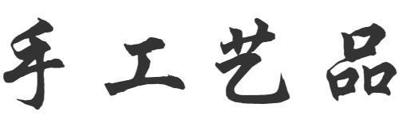
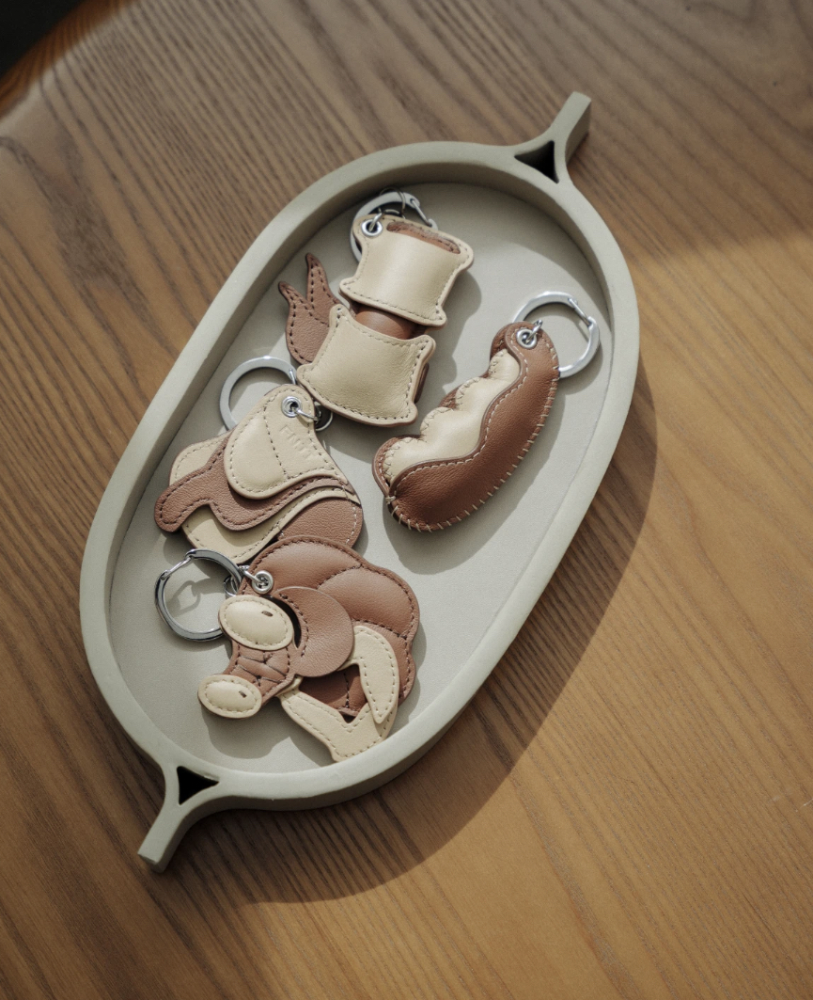
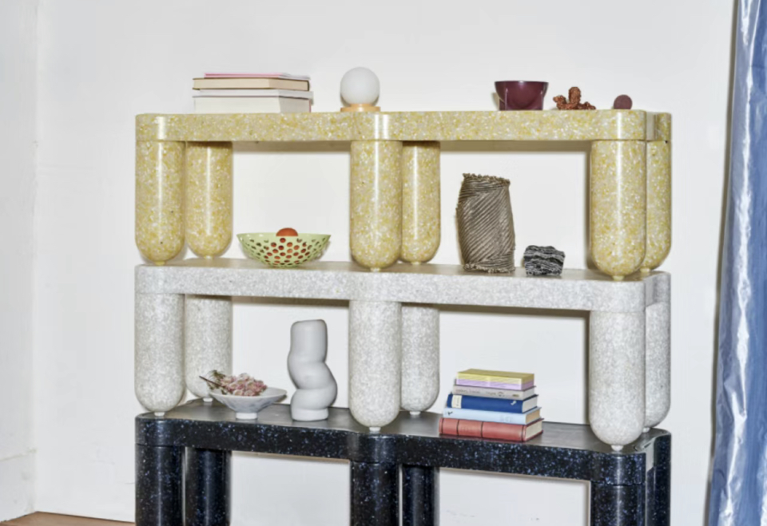
收集而来的废置皮料被解构再造成了精美的钥匙扣。延续根植在梵几品牌中自然的设计语言，将螳螂、豆荚等具有代表性的元素，转化成了日常能够随身携带的精巧物件。
收集回收的大理石泥浆、玻璃镜、穿钢孔、大理石碎片等制作成家具。在具有可持续发展的同时，goodwaste这个小众品牌的设计理念和外观设计风格都非常打动人。